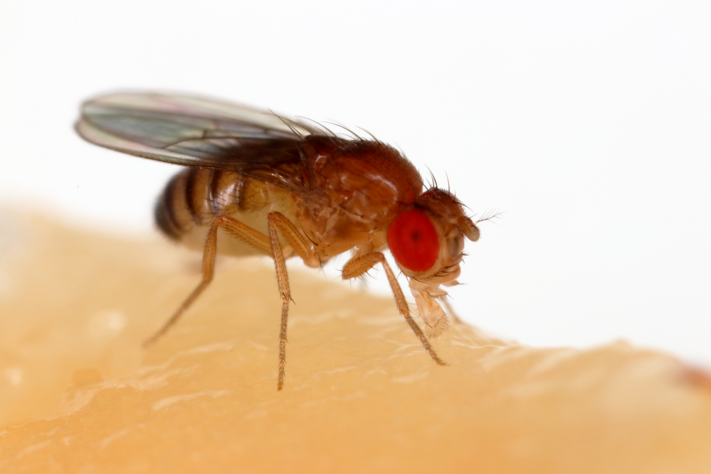
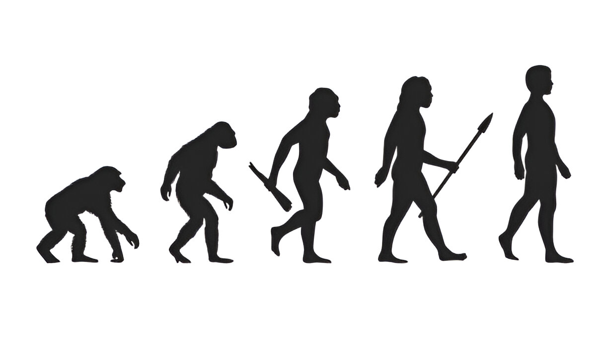

A evolução em espécies comtemporâneas da-se pelos fatores mencionados nas diversas páginas que se encontram acima, como por exemplo a seleção natural, a variabilidade genética,etc. E támbem vimos que é possível através da analíse de fósseis e estruturas morfológicas de animais antigos, descobrirmos diversas informações sobre como decorreu, quanto tempo e por quais fatores houve a evolução de dada espécie para a direção que tomou. Mas nesta página será abordado como é possível encontrar dados únicos e inovadores em espécies modernas e como elas podem evoluir futuramente.

As Drosophila melanogaster (moscas-da-fruta como são vulgarmente conhecidas) são utilizadas para diversos experimentos relacionados com genética e evolucionismo, a curta vida destes insetos, de apenas 10 a 14 dias, dá aos cientistas a oportunidade de estudar múltiplas gerações num curto período de tempo, tornando mais fácil observar como evoluem e transmitem os seus genes. Além disso, essas moscas têm muitos descendentes, o que significa que podemos estudá-las detalhadamente e aprender muito com seu comportamento. Também é fácil de cultivar em laboratório, o que o torna uma escolha popular entre os cientistas. As moscas-da-frutas podem ser mantidas em grandes grupos em recipientes especiais, como potes cheios de determinados alimentos, o que torna a realização de experimentos fácil e barata. Além disso, a drosófila tem sido amplamente estudada e podemos ver facilmente suas características físicas, como a cor dos olhos (vermelhos ou brancos), o tamanho do corpo e o formato das asas. Isto permite-nos explorar como as características são transmitidas de pais para filhos e como novas características podem surgir através de mudanças no ADN. Essas vantagens (ciclo de vida curto, fácil manipulação, alta taxa de reprodução e genética bem compreendida) fizeram da Drosophila melanogaster um modelo crucial para o estudo da genética, evolução e seleção natural. É como a espinha dorsal da pesquisa genética, ajudando os cientistas a compreender como as características são transmitidas de uma geração para a seguinte.
Os pesquisadores queriam ver se conseguiriam fazer com que as moscas mudassem as suas características, escolhendo quais gostariam de transmitir aos seus descendentes. As moscas podem não ter características sofisticadas, mas possuem algumas características notáveis, como cor dos olhos, tamanho do corpo ou formato das asas, que podem ser escolhidas. O experimento é muito fácil de controlar porque tudo é muito previsível. Um exemplo clássico de experimento com drosófila foi o estudo da seleção da cor dos olhos. As moscas podem ter olhos vermelhos ou brancos, dependendo da sua composição genética. Os cientistas tinham o poder de escolher moscas com olhos vermelhos ou brancos para terem descendentes, o que tornou as moscas de olhos vermelhos mais comuns nas gerações subsequentes.
Os pesquisadores podiam selecionar moscas para determinadas características e acompanhar como essas características se manifestavam nas gerações seguintes. Esse processo permitiu aos cientistas visualizar como a seleção artificial atua na evolução de características fenotípicas.
Além das características simples e discretas (como cor dos olhos), a seleção artificial também pode ser aplicada a características quantitativas, que variam em uma escala, como tamanho do corpo, duração de vida ou resistência a doenças. Usando como exemplo o caso de Cientistas escolherem moscas com um corpo maior para cruzamento. Ao longo de várias gerações, isso levaria a um aumento no tamanho médio das moscas na população. Esse tipo de experimento pode ser usado para estudar a herança poligênica, ou seja, como várias genes interagem para afetar uma característica quantitativa.
Os experimentos de seleção artificial também podem focar em características comportamentais. Um exemplo famoso de experimento de seleção comportamental foi o de seleção de resistência ao estresse.
Outro experimento clássico é a seleção de resistência a pesticidas. Em laboratórios, cientistas expuseram as moscas da fruta a pesticidas ou toxinas específicas, e apenas as moscas que possuíssem resistência a essas substâncias conseguiam sobreviver e se reproduzir. Esse processo de seleção artificial ajudou a entender como as populações podem evoluir rapidamente em resposta a pressões seletivas humanas.

Os experimentos de seleção artificial com Drosophila melanogaster ajudaram a ilustrar como a evolução funciona em um nível genético, confirmando muitas ideias fundamentais da biologia evolutiva, como a herança mendeliana,o papel das mutações e a seleção natural. Além disso, esses estudos forneceram insights importantes sobre como as populações evoluem em resposta a pressões seletivas, incluindo intervenções humanas, e como características podem ser rapidamente selecionadas em uma população.Esses experimentos continuam sendo fundamentais para entender a dinâmica genética das populações e a evolução de características específicas, oferecendo uma base para pesquisas em genética, evolução e até biotecnologia.